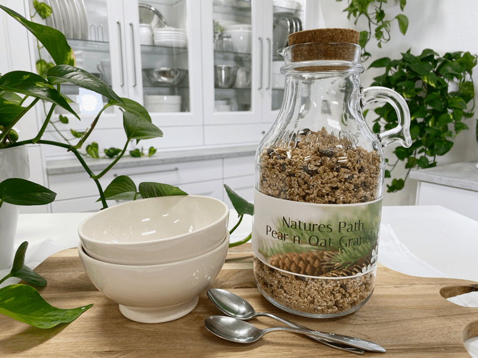

Natures Path Pear n’ Oat Granola
I believe in real food made from simple ingredients that taste amazing and carries a pack of nutrients. This granola is dairy-free, vegan, soy-free, nut-free, and gluten-free. It is simply real food from nature. On top of that, it has NO fillers. NO artificial anything. Preservative-free. It is crunchy, perfectly sweetened, and packed full of nutrients. If this resonates with you, keep reading.

Ingredient Tips
Sweeteners
The beauty of granola recipes is that you can tailor them to your liking. This particular recipe is nut-free but has grains. If you want it to be grain-free and don’t mind nuts, you can swap ingredients. For sweeteners, I used fresh pears, maple syrup, and raisins. If pears are not in season, feel free to use another fresh fruit. Just make sure that whatever you choose to use, that it is ripe. If sweet enough, you might get away with reducing or omitting the maple syrup, so be sure to taste test along the way.
And lastly, in the sweetener department… If you don’t care for dried fruit, skip it, but it’s good to know that it increases the textural variety and adds a new layer of flavor.
Oats, soaked & dehydrated
In my recipes, I use gluten-free, rolled oats that had already been soaked and dehydrated; this is a time-saving thing that I do with all the nuts, seeds, and grains that I buy. This way, they are ready for snacking and recipe creating. You can start off using just soaked oats, which will affect the aesthetics of the granola, but it’s totally fine. You can skip the whole soaking process, but I recommend it. Click (here) to read why. Are you curious if oats can be gluten-free? Click (here) to read more about it. If raw is your top priority, oats can be found truly raw. Click (here) to learn more about them.
Flax Seeds
So, why did I add flax seeds? Well, there are several reasons. First off, they add amazing nutrients. They are packed with Omega-3 fatty acids (which help fight inflammation). They contain both the soluble and insoluble types and can be very bulk-forming in the colon. This process can be a real blessing for those who suffer constipation, but it can also hinder movement when you don’t drink enough water. They also act as a binder, holding the ingredients together after everything is mixed together. If you don’t have any, don’t like them, or can’t eat them, go ahead and use chia seeds instead.
 Ingredients
Ingredients
yields 12 cups
- 8 cups (939 g) diced fresh pears, pureed
- 3 cups (263 g) GF rolled oats, soaked & dehydrated
- 1 1/2 cups (309 g) buckwheat, soaked
- 1 1/2 cups (163 g) finely shredded macaroon coconut
- 1 1/4 cups (230 g) raisins
- 1/2 cup (145 g) maple syrup (as needed)
- 1/2 cup (110 g) golden flax seeds, soaked in 1 cup water
- 1/2 tsp (7 g) sea salt
Preparation
- In a food processor, fitted with the “S” blade, puree the fresh ripe pears. Pour the puree into a large bowl.
- It’s up to you whether you remove the skins. However, if you are NOT using organic pears, please remove the skin to reduce the level of pesticides.
- Start the soaking process for the flax seeds while combining the remaining ingredients. In a small bowl, stir the flax and water together.
- The purpose behind this is to prepare the flax seeds for better absorption in the body. They need to either be soaked or ground down for the body to absorb their powerhouse of nutrients.
- To the bowl, add the oats, buckwheat, dried coconut, raisins, maple syrup, and salt. With your hands, dive in and mix everything well (making sure to coat the dry ingredients with the wet).
- Spread the batter onto a non-stick dehydrator sheet and dehydrate at 145 degrees (F) for 1 hour, then reduce to 115 degrees (F) and continue to dry to 10+ hours (or until completely dry).
- Store in an airtight container on the counter for several weeks or in the freezer for several months.
© AmieSue.com